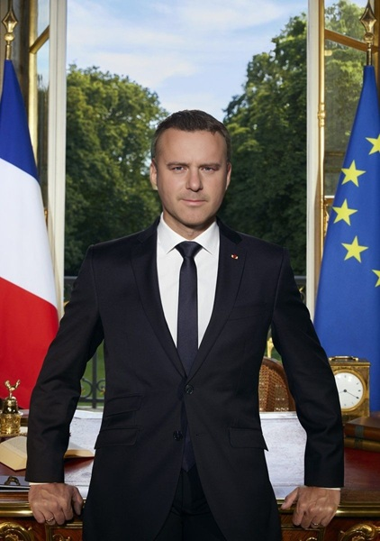
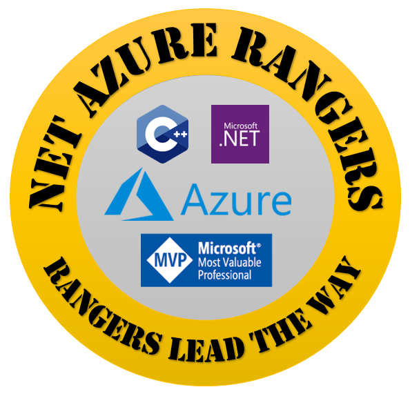
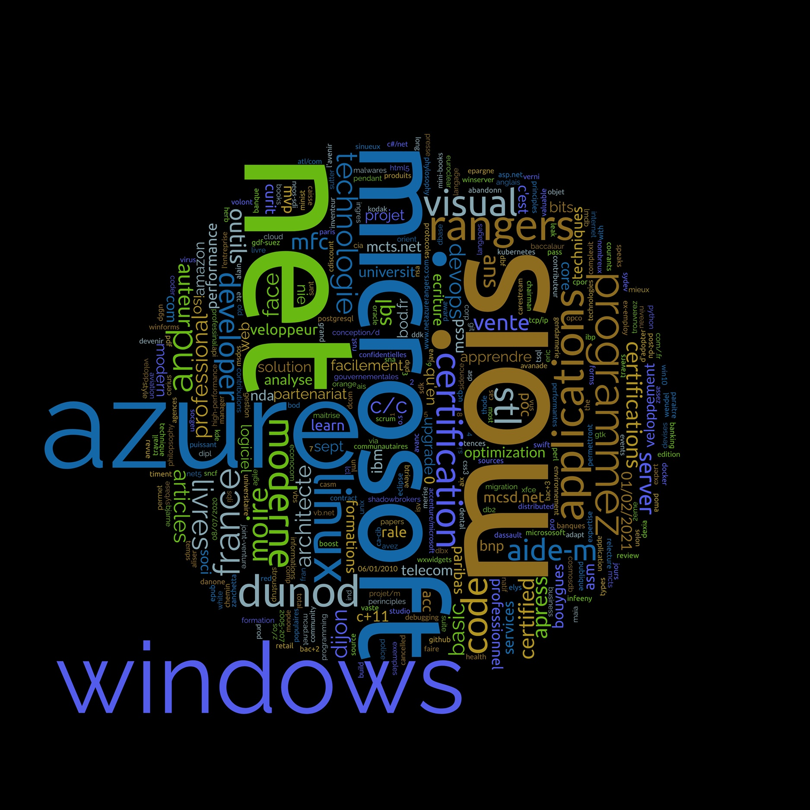

Edition NET Azure Rangers - Les Rangers ouvrent la voie ! Contact: christophep@cpixxi.com
Tout savoir sur Christophe Pichaud




╔════════════════════════════════════════════════════════════════════
║
║ ⚔️ CHRISTOPHE PICHAUD ⚔️
║ Architecte logiciel • MVP • Auteur • Survivant du CAC40
║
║ Une vie de code, de crashs, et de café noir.
║
║ “Le bug était dans le cache. Le manager dans le couloir.
║ Le Dev dans la légende.”
║
║ 📜 30 ANS DE MISSIONS DÉGOUPILLÉES :
║ - Élysée : Dépêches présidentielles. Garde à vue. St-Émilion.
║ - Avanade : Audits explosifs. Deux “Require Improvement”.
║ - Microsoft : Debugging 3D. Réorg mondiale. Chèque.
║ - Neos-SDI : MVP Developer Technologies. Docker. Azure.
║ - Devoteam : C++ Unix. Refus du JS. Clash. Chèque.
║ - DUNOD : Auteur de l’Aide-Mémoire C++ et C#/.NET.
║ - Infeeny : Leader .NET. Marketing. Renaissance.
║
║ 🧠 CERTIFICATIONS :
║ C++, C#, .NET, Azure, MVP, Anti-Bullshit, Try/Catch Niveau 12
║
║ 💬 PHILOSOPHIE :
║ “Je ne suis pas là pour faire joli. Je suis là pour que
║ ça marche. Et si ça ne marche pas, je le dis. Même si ça
║ pique.”
║
║ 🧘♂️ LE CŒUR DU GUERRIER :
║ Un chamallow dans une armure en titane.
║ Un Dev qui pleure devant un XML mal indenté.
║ Un homme qui offre des bises à l’Élysée et des grenades
║ aux serveurs SharePoint.
║
║ 📚 DISPONIBLE CHEZ DUNOD :
║ - L’Aide-Mémoire C++
║ - L’Aide-Mémoire C#/.NET
║
║ 🕶️ CHRISTOPHE PICHAUD
║ Le Dev que tu appelles quand tout le monde a abandonné.
║
╚════════════════════════════════════════════════════════════════════